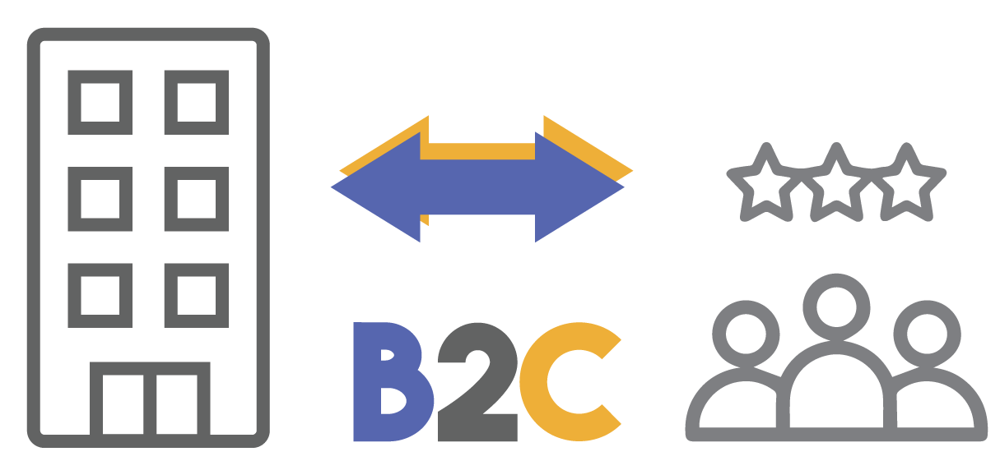
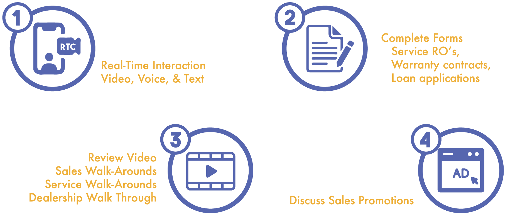

We propose to upgrade your current on-line customer engagement processes with a new technology solution that includes multi-function capabilities not offered by other video conferencing solutions like Skype, Zoom, Duo, FaceTime or GoToMeeting, etc.
Key Differences
Our solution is designed for B-to-C engagement that includes integrated multi-function capabilities. Depending on the service used, the other conferencing solutions are designed for B-to-B or C-to-C scheduled, real-time communication only.
You cannot embed their service into your current online engagement processes or use them to create new customized processes that better align with your business needs.
Integrated Functionality
Our solution integrates real-time communication and web service technology in a way that enables the delivery of more powerful multi-dimensional online engagement.
- Real-time video, text and voice
- Automated enrollment and follow-up
- Embedded multi-media content delivery
- Real-time co-browsing
Multi-Function Capabilities
With the click of a button our solution enables your staff to engage customers using HD real-time video communication.
During their conversations, and without interruption, they can assist customers in the completion of forms, execute interactive walk-arounds, and/or send embedded media content.
Why Our Product Work
Humans respond to visual interaction differently than text or voice alone. Psychologists refer to this as the “McGurk Effect”: what a prospect sees changes what they hear. What they hear changes their behavioral pattern and decision-making process. The key stimulant effecting a change in response to content is direct eye contact.
What Experts are Saying?
We are first movers in the development of a solution that is configured to deliver the services we have outlined. Therefore, we cite studies based on data taken from businesses that applied a B-to-B real-time video solution in an ad-hoc fashion to engage customers.
Closing Ratio +40%
Gong.io’s AI analysis of 121,828 online sales presentations found that presentations that included real-time video closed 40% more often.
Closing Ratio +41%
SalesForce.com improved their online sales presentation’s closing ratios by 41% after adding real-time video to its pitch decks.
ROI 52%
Syndacast.com survey: 52% of marketing professionals named real-time video produces the highest ROI.
Additional Features
Seamless Integration
Can be integrated with information management applications (DMS, CRM, etc.) or used as a stand-alone service.
Embedded Ad Delivery
When the call is made our system can serve up additional branded content that brings context to the video conversation.
Single Click Interoperability
Single click functionality enables communications from anywhere, any time, using most modern enabled communication devices.
Customizable
If you can think of a scenario in which you want to apply our technology, we can design it.
Exclusive and Personalized
All communication with the customer is personalized to them, and they only see your content.
Cost Effective
Eliminates the need for many 3rd party content delivery services and improves the productivity and performance of your sales staff.